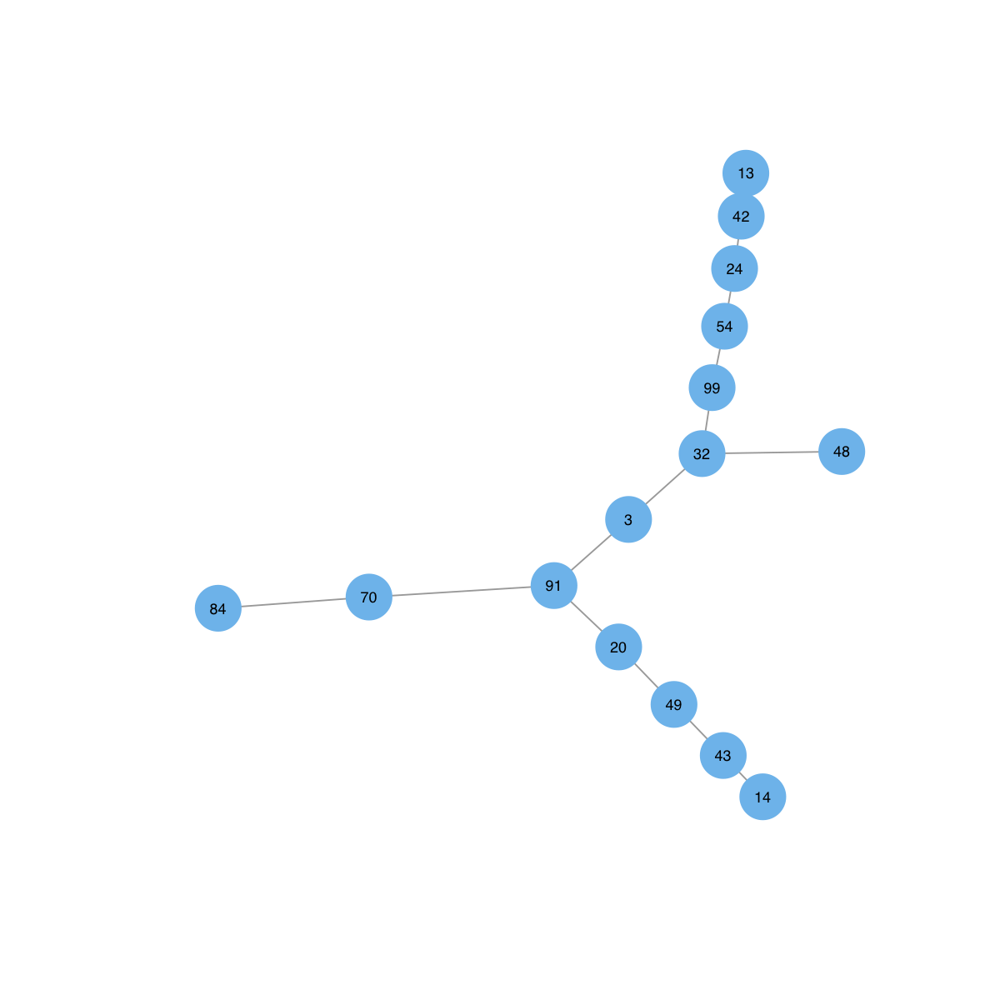
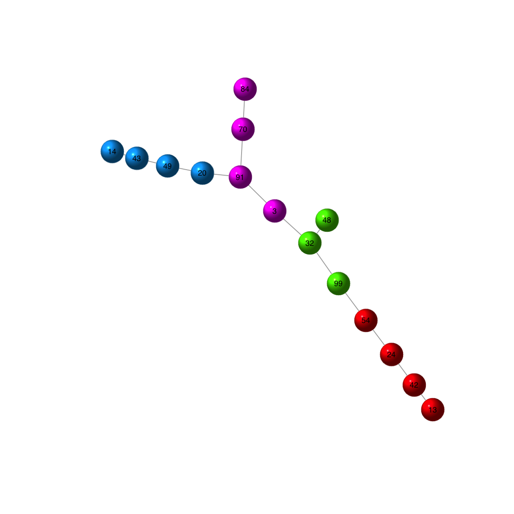
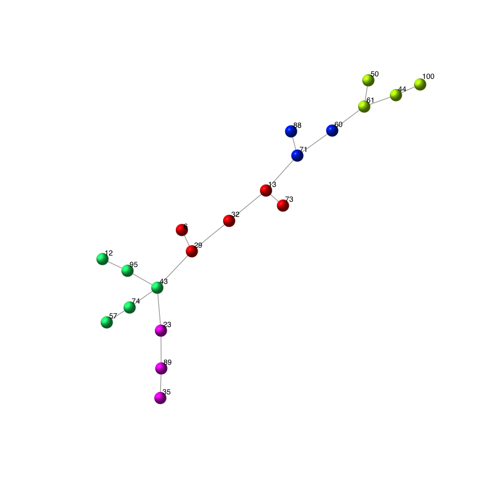
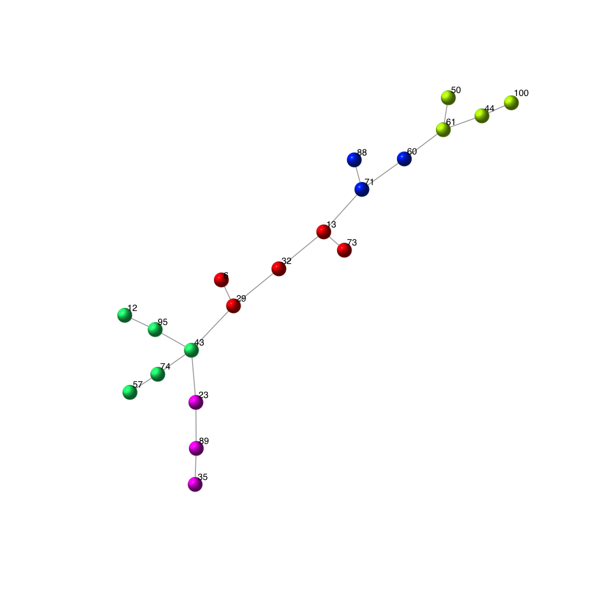

How many ways are supported to visualise gene-active networks?
Notes:
# The dnet package supports two ways to visualise the identified networks/graphs: 1) the network itself as a single display, 2) the same network but with the multiple colorings/displays according to multiple samples.
# To demonstrate the visuals supported, we use a random graph according to the ER model, and only keep the largest component
g <- erdos.renyi.game(100, 1/100)
g <- dNetInduce(g, nodes_query=V(g))
# To display the network itself, the key setting is the layout. Since the network is represented as an object of class 'igraph', the layouts supported in the 'igraph' package can be found in the layout page.
## using a force-based algorithm proposed by Fruchterman and Reingold
visNet(g, layout=layout.fruchterman.reingold)

## using a spring embedder algorithm
visNet(g, layout=layout.spring)

# Additionally, the dnet package also uses two other layouts/diagrams: 1) arc diagram in one-dimensional layout, and 2) circle diagram.
# To better display the network, it is advisable to incorporate community information. In doing so, we first identify communities based on a spin-glass model and simulated annealing.
com <- igraph::spinglass.community(g, spins=25)
vgroups <- com$membership
## color nodes: according to communities
mcolors <- visColormap(colormap="rainbow")(length(com))
vcolors <- mcolors[vgroups]
## size nodes: according to degrees
vdegrees <- igraph::degree(g)
## sort nodes: first by communities and then degrees
df <- data.frame(ind=1:vcount(g), vgroups, vdegrees)
ordering <- df[order(vgroups,vdegrees),]$ind
# Now, make comparsions between different layouts
## using 1-dimensional arc diagram
visNetArc(g, ordering=ordering, vertex.label.color=vcolors, vertex.color=vcolors, vertex.frame.color=vcolors, vertex.size=log(vdegrees)+0.1)
 ## using circle diagram (drawn into a single circle)
visNetCircle(g, colormap="rainbow", com=com, ordering=ordering)
## using circle diagram (drawn into a single circle)
visNetCircle(g, colormap="rainbow", com=com, ordering=ordering)
 ## using circle diagram (drawn into multlpe circles: one circle per community)
visNetCircle(g, colormap="rainbow", com=com, circles="multiple", ordering=ordering)

## using a force-based algorithm proposed by Fruchterman and Reingold
visNet(g, colormap="rainbow", layout=layout.fruchterman.reingold, vertex.color=vcolors, vertex.frame.color=vcolors, vertex.shape="sphere")
## using circle diagram (drawn into multlpe circles: one circle per community)
visNetCircle(g, colormap="rainbow", com=com, circles="multiple", ordering=ordering)

## using a force-based algorithm proposed by Fruchterman and Reingold
visNet(g, colormap="rainbow", layout=layout.fruchterman.reingold, vertex.color=vcolors, vertex.frame.color=vcolors, vertex.shape="sphere")
 ## when using force-based layout, it is also useful to highlight the communities in the background, and have edges being colored differently according whether an edge lies within a community or between communities.
mark.groups <- igraph::communities(com)
mark.col <- visColoralpha(mcolors, alpha=0.2)
mark.border <- visColoralpha(mcolors, alpha=0.2)
edge.color <- c("grey", "black")[igraph::crossing(com,g)+1]
visNet(g, colormap="rainbow", glayout=layout.fruchterman.reingold, vertex.color=vcolors, vertex.frame.color=vcolors, vertex.shape="sphere", mark.groups=mark.groups, mark.col=mark.col, mark.border=mark.border, mark.shape=1, mark.expand=10, edge.color=edge.color)
## when using force-based layout, it is also useful to highlight the communities in the background, and have edges being colored differently according whether an edge lies within a community or between communities.
mark.groups <- igraph::communities(com)
mark.col <- visColoralpha(mcolors, alpha=0.2)
mark.border <- visColoralpha(mcolors, alpha=0.2)
edge.color <- c("grey", "black")[igraph::crossing(com,g)+1]
visNet(g, colormap="rainbow", glayout=layout.fruchterman.reingold, vertex.color=vcolors, vertex.frame.color=vcolors, vertex.shape="sphere", mark.groups=mark.groups, mark.col=mark.col, mark.border=mark.border, mark.shape=1, mark.expand=10, edge.color=edge.color)

)
)
)
)
){kind=link}
){kind=link}
){kind=link}
Functions used in this FAQ
Citation
Fang H, Gough J. (2014) dnet: an open-source R package for omics data integrative analysis in terms of network, evolution and ontology. http://dnet.r-forge.r-project.org